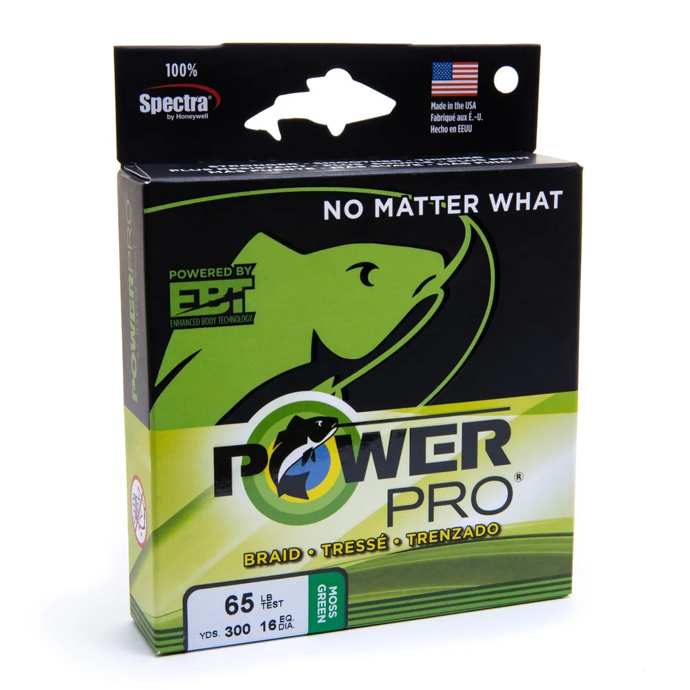

PowerPro Spectra Braid
Diameter chart, reel capacity & backing guide

The original four-carrier PowerPro, made with Spectra fiber. A thin, low-stretch main line for freshwater and saltwater setups, with a wide choice of strengths. This guide covers original PowerPro, not Super8Slick V2 or Maxcuatro.
- Construction
- 4-carrier Spectra
- Listed strengths
- 5-250 lb
- Line type
- Braid main line
Is PowerPro right for your setup?
PowerPro is worth considering when you want a low-stretch braid for freshwater or saltwater fishing, with the option to add a leader near the lure. The main tradeoff is that thin braid needs careful spooling and handling, especially on a baitcaster where it can dig into underlying wraps. Choose strength for the rod, lure, cover, and fish first. Then use the reel's capacity to plan the working length and any backing underneath it.
How much PowerPro will fit?
Calculated estimates, not measured fills. Stop at the reel manufacturer's fill level even if some line remains.
PowerPro Spectra diameter chart
These are the original PowerPro specifications in the ReelCalc catalog. Super8Slick V2 and Maxcuatro are different products and should not be treated as the same line.
| Strength | Inches | mm | Spools (yd) |
|---|---|---|---|
| 0.004 | 0.100 | 100, 150, 300, 500, 1500, 3000 | |
| 0.005 | 0.130 | 100, 150, 300, 500, 1500, 3000 | |
| 0.006 | 0.150 | 100, 150, 300, 500, 1500, 3000 | |
| 0.008 | 0.190 | 100, 150, 300, 500, 1500, 3000 | |
| 0.009 | 0.230 | 100, 150, 300, 500, 1500, 3000 | |
| 0.011 | 0.280 | 100, 150, 300, 500, 1500, 3000 | |
| 0.012 | 0.320 | 100, 150, 300, 500, 1500, 3000 | |
| 0.014 | 0.360 | 100, 150, 300, 500, 1500, 3000 | |
| 0.016 | 0.410 | 100, 150, 300, 500, 1500, 3000 | |
| 0.017 | 0.430 | 150, 300, 500, 1500, 3000 | |
| 0.018 | 0.460 | 150, 300, 500, 1500, 3000 | |
| 0.022 | 0.560 | 300, 500, 1500, 3000 | |
| 0.030 | 0.760 | 500, 1500, 3000 | |
| 0.035 | 0.890 | 1500, 3000 |
Choosing a PowerPro strength
Start with the rod's line range, the lure, and the cover you fish. A reel's printed capacity rating describes how much line fits; it is not automatically the strength you should use.
For a baitcaster, consider handling and resistance to digging into the spool as well as diameter. Do not choose the thinnest PowerPro simply to maximize capacity. For either reel type, keep enough working line for the cast, fish runs, and retying.
A leader is a separate choice. Its strength does not have to match the braid's pound-test label.
This is a specification-based setup guide, not a hands-on review or a claim that PowerPro casts farther than another braid.
Want a guided recommendation?
Continue in the Setup WizardSame pound test, different diameters
At your selected strength
Loading diameter comparisons...
What changes with another line?
Nearby diameters in the line database
| Line | Strength | Inches | Difference |
|---|---|---|---|
| Loading line database... | |||
Backing, working line & leaders
Backing goes underneath
Mono backing occupies the spool space below the working braid. It can also help prevent slipping on a smooth arbor. A braid-ready attachment may remove the need for an anti-slip layer, but backing can still be useful when you only want part of the spool filled with PowerPro.
Choosing mono backingWorking length is a fishing decision
Keep enough braid for the longest likely cast, fish runs, and line lost to retying. A 150-yard package is not automatically enough for every reel or fishery. Wind with even tension and stop at the recommended spool lip clearance rather than forcing the calculated amount onto the reel.
Baitcaster fill-level guideA leader goes at the lure end
A mono or fluorocarbon leader is separate from backing. It gives you a replaceable section near the lure; its material and strength depend on cover, presentation, and target fish. A short leader is not included in this backing calculation. A long topshot takes spool space and needs its own plan.
Choosing a leader for braidHow Much Fits on These Reels?
Estimated full-spool capacity for the PowerPro strength selected above, with no backing. These are calculated examples, not physical tests or recommendations for every pairing.
Loading capacity estimates...
PowerPro questions, answered
How much PowerPro does my reel need?
It depends on the exact PowerPro diameter and the reel's published capacity. Choose the strength and reel in the ReelCalc tool to estimate a full fill or a shorter working fill over backing.
Do I need backing under PowerPro?
Not every reel requires it. Backing can prevent slipping on a smooth arbor and can reduce the amount of premium braid used. Follow the reel manufacturer's instructions when the spool is designed for direct braid attachment.
Is 150 yards of PowerPro enough?
It can be enough when the planned working length fits within 150 yards and leaves an appropriate reserve for your fishing. A reel may hold considerably more, so backing can fill the unused space. For long casts or fish that make long runs, choose the working length first instead of assuming one 150-yard package is sufficient.
Does PowerPro diameter affect reel capacity?
Yes. Reel capacity follows physical line diameter much more closely than the pound-test label. Two braids with the same rated strength can produce different fill amounts.
Should I use a fluorocarbon leader?
A leader can add abrasion resistance, a less-visible bite section, or a different sink profile. It is optional and should match the cover, lure, target fish, and drag setting.
Is this the same line as PowerPro Super8Slick V2?
No. This page is for original four-carrier PowerPro Spectra. Super8Slick V2 is a separate PowerPro product. Use its own line record and listed diameter rather than assuming the same pound test means the same spool capacity.
Why can two lines with the same pound test fit differently?
Pound test is a strength label, not a fixed physical diameter. For example, original PowerPro 20 lb is listed at 0.009 inch while its 30 lb version is 0.011 inch. Compare the exact diameter of any alternative, including another brand's 20 lb line, before estimating capacity. The same listed diameter does not establish identical strength or handling.
Specifications & sources
Rechecked September 12, 2026. The manufacturer's original PowerPro variants confirm the offered strengths and spool lengths. Listed diameters were checked against Fisherman's Headquarters; this chart is retailer-sourced, not a ReelCalc measurement. No live price or inventory is implied.
Calculations use the catalog's listed inch diameters. Published inch and millimeter values may differ slightly because of rounding.
- Official PowerPro product page Current strengths, spool offerings, colors, construction, and manufacturer positioning.
- Fisherman's Headquarters diameter chart Published diameter chart used where the official current page does not list diameter.
- FishUSA PowerPro chart Independent cross-check for 5 through 80 lb diameters.